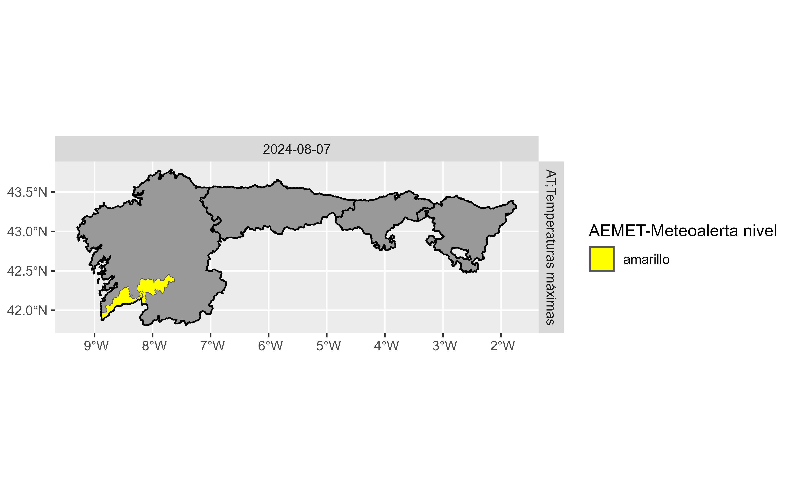

![[Experimental]](figures/lifecycle-experimental.svg) Get a database of current meteorological
alerts.
Get a database of current meteorological
alerts.
Usage
aemet_alerts(
ccaa = NULL,
lang = c("es", "en"),
verbose = FALSE,
return_sf = FALSE,
extract_metadata = FALSE,
progress = TRUE
)Source
https://www.aemet.es/en/eltiempo/prediccion/avisos.
https://www.aemet.es/es/eltiempo/prediccion/avisos/ayuda. See also Annex 2 and Annex 3 docs, linked in this page.
Arguments
- ccaa
A vector of names for autonomous communities or
NULLto get all the autonomous communities.- lang
Language of the results. It can be
"es"(Spanish) or"en"(English).- verbose
Logical
TRUE/FALSE. Provides information about the flow of information between the client and server.- return_sf
Logical
TRUEorFALSE. Should the function return ansfspatial object? IfFALSE(the default value) it returns atibble. Note that you need to have the sf package installed.- extract_metadata
Logical
TRUE/FALSE. OnTRUEthe output is atibblewith the description of the fields. See alsoget_metadata_aemet().- progress
Logical, display a
cli::cli_progress_bar()object. Ifverbose = TRUEwon't be displayed.
See also
aemet_alert_zones(). See also mapSpain::esp_codelist,
mapSpain::esp_dict_region_code() to get the names of the
autonomous communities.
Other aemet_api_data:
aemet_alert_zones(),
aemet_beaches(),
aemet_daily_clim(),
aemet_extremes_clim(),
aemet_forecast_beaches(),
aemet_forecast_daily(),
aemet_last_obs(),
aemet_monthly,
aemet_normal,
aemet_stations()
Examples
# Display names of CCAAs
library(dplyr)
#>
#> Attaching package: 'dplyr'
#> The following objects are masked from 'package:stats':
#>
#> filter, lag
#> The following objects are masked from 'package:base':
#>
#> intersect, setdiff, setequal, union
aemet_alert_zones() %>%
select(NOM_CCAA) %>%
distinct()
#> # A tibble: 19 × 1
#> NOM_CCAA
#> <chr>
#> 1 Andalucía
#> 2 Aragón
#> 3 Principado de Asturias
#> 4 Illes Balears
#> 5 Canarias
#> 6 Cantabria
#> 7 Castilla y León
#> 8 Castilla - La Mancha
#> 9 Cataluña
#> 10 Extremadura
#> 11 Galicia
#> 12 Comunidad de Madrid
#> 13 Región de Murcia
#> 14 Comunidad Foral de Navarra
#> 15 País Vasco
#> 16 La Rioja
#> 17 Comunitat Valenciana
#> 18 Ciudad de Ceuta
#> 19 Ciudad de Melilla
# Base map
cbasemap <- mapSpain::esp_get_ccaa(ccaa = c(
"Galicia", "Asturias", "Cantabria",
"Euskadi"
))
# Alerts
alerts_north <- aemet_alerts(
ccaa = c("Galicia", "Asturias", "Cantabria", "Euskadi"),
return_sf = TRUE
)
# If any alert
if (inherits(alerts_north, "sf")) {
library(ggplot2)
library(lubridate)
alerts_north$day <- date(alerts_north$effective)
ggplot(alerts_north) +
geom_sf(data = cbasemap, fill = "grey60") +
geom_sf(aes(fill = `AEMET-Meteoalerta nivel`)) +
geom_sf(
data = cbasemap, fill = "transparent", color = "black",
linewidth = 0.5
) +
facet_grid(vars(`AEMET-Meteoalerta fenomeno`), vars(day)) +
scale_fill_manual(values = c(
"amarillo" = "yellow", naranja = "orange",
"rojo" = "red"
))
}
#>
#> Attaching package: 'lubridate'
#> The following objects are masked from 'package:base':
#>
#> date, intersect, setdiff, union
